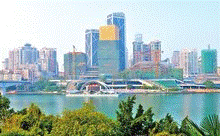
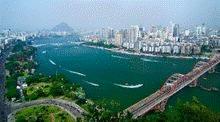
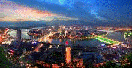

柳州（壮文：Liujcouh）位于广西壮族自治区中北部，地形为“三江四合，抱城如壶”，故称“壶城”。 又叫龙城，龙城的名字源于南朝梁。柳州是以工业为主、综合发展的区域性中心城市和交通枢纽， 是山水景观独特的国家历史文化名城。从建城至今已有两千一百多年的历史。

柳州虽为广西最大的工业城市，但却有着山清水秀地干净的美誉。柳州工业经济总量占比居广西 各市首位，约占广西总工业的1/4，尤以汽车、机械、冶金为支柱。柳州是国家信息化带动工业化 试点城市、全国科技经济体制综合配套试点城市和国家技术创新试点城市。柳州素有“桂中商埠”之称。

柳州是一座壮族、汉族等30多个民族相聚而居的城市，其中壮族和侗族是柳州最古老的 土著世居民族，多分布于市郊和郊县，他们分别属于先秦百越不同的越系分支后裔。柳州也是 壮族等南方少数民族的发源地之一，壮族先民柳江人和白莲洞人在此繁衍生息，并创造了古老的白莲洞文化。 柳州民族风情独具神韵，壮族的歌、瑶族的舞、苗族的节和侗族的楼，堪称柳州“民族风情四绝”。
